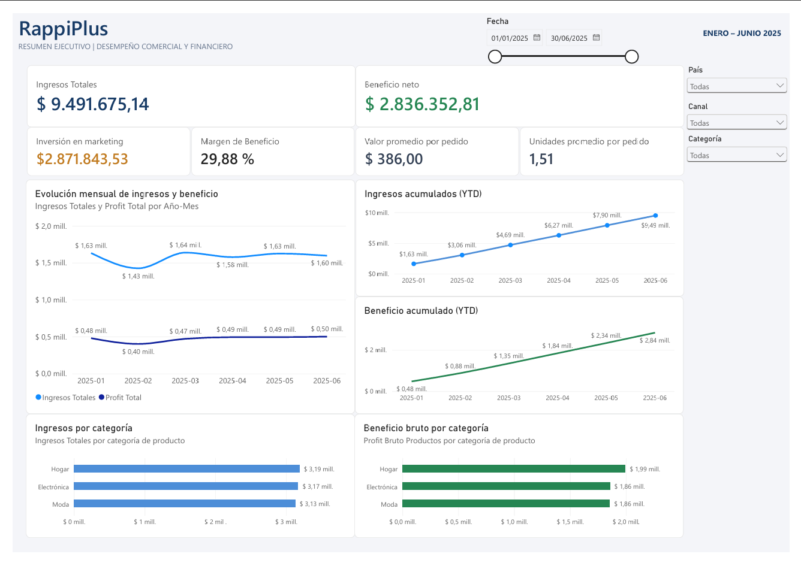

Proyecto integral de análisis de datos enfocado en evaluar
el desempeño comercial, la rentabilidad y el comportamiento
de los usuarios de RappiPlus. Mediante Python, SQL y Power BI,
desarrollé procesos de limpieza y análisis de datos,
evaluación de rentabilidad, funnel de conversión, retención
por cohortes y experimentación A/B, consolidando los
resultados en un dashboard interactivo para respaldar
la toma de decisiones.
Preguntas clave
El análisis busca responder cinco preguntas fundamentales
sobre el desempeño comercial y el comportamiento de los
usuarios de RappiPlus:
¿Los usuarios están generando mayores ingresos a través
de sus compras?
¿El modelo de negocio está generando rentabilidad?
¿En qué etapas del proceso de compra se pierden
oportunidades de conversión?
¿Los usuarios regresan y mantienen su actividad
en la plataforma?
¿Los cambios implementados en el proceso de compra
generan un impacto significativo?
Herramientas utilizadas
Análisis y procesamiento
Python · Pandas · NumPy
Consultas y bases de datos
SQL · PostgreSQL
Análisis estadístico
Pruebas de hipótesis · Experimentación A/B
Visualización y BI
Power BI · DAX
Desarrollo del proyecto
Preparación de datos:
limpieza, transformación y validación de los conjuntos de datos.
Análisis de rentabilidad:
evaluación de ingresos, costos, inversión en marketing y beneficios.
Funnel de conversión:
análisis del comportamiento de los usuarios durante el proceso de compra.
Retención por cohortes:
seguimiento del comportamiento de los usuarios a lo largo del tiempo.
Experimento A/B:
evaluación estadística de una modificación en el proceso de checkout.
Dashboard:
integración de indicadores y visualizaciones interactivas en Power BI.
Resultados destacados
$9,49 M
Ingresos totales
$2,83 M
Beneficio calculado
29,88%
Margen calculado
El beneficio calculado corresponde a los ingresos menos
los costos de producto y la inversión en marketing.
Visualización destacada
Dashboard ejecutivo desarrollado en Power BI para
explorar el desempeño financiero y comercial de RappiPlus.

Executive Overview · Dashboard de RappiPlus
Conclusiones y recomendaciones
Evaluar la rentabilidad considerando conjuntamente
ingresos, costos de producto e inversión en marketing.
Identificar productos y categorías con resultados
económicos desfavorables para revisar sus costos
y estrategias comerciales.
Analizar los puntos de abandono del proceso de compra
para identificar oportunidades de mejora en la conversión.
Utilizar el análisis de cohortes para comprender
la evolución de la retención de usuarios.
El experimento A/B no presentó evidencia estadística
suficiente para concluir que el nuevo checkout
mejorara la conversión.